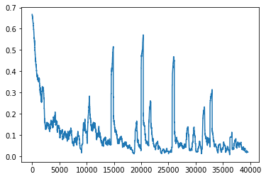
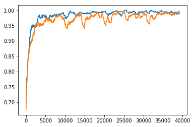
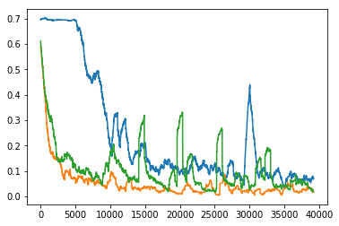

class: center, middle, title-slide count: false # Lesson 7 ##Reccurrent Neural Networks <br/><br/> .bold[Marc Lelarge] --- # Overview of the course: 1- .grey[Course overview: machine learning pipeline] 2- .grey[PyTorch tensors and automatic differentiation] 3- .grey[Classification with deep learning] 4- .grey[Convolutional neural networks] 5- .grey[Embedding layers and dataloaders] 6- .grey[Unsupervised learning: auto-encoders and generative adversarial networks] 7- Recurrent neural networks * .red[Deep learning architectures] - in Pytorch: [Recurrent layers](https://pytorch.org/docs/stable/nn.html#recurrent-layers) --- # Convolutional Networks We can integrate the temporal dimension with a 1d convolution. .left-column[ .center[<img src="images/lesson7/wavenet_1.gif" style="width: 400px;" />] ] .right-column[ .center[<img src="images/lesson7/wavenet_2.gif" style="width: 400px;" />] ] .reset-column[ ] source: [Deepmind blog](https://deepmind.com/blog/wavenet-generative-model-raw-audio/) <br/> <br/> .citation.tiny[ van den Oord et al., [WaveNet: A Generative Model for Raw Audio](https://arxiv.org/pdf/1609.03499.pdf), 2016] --- # Recurrent Neural Networks Several variants .left[<img src="images/lesson7/rnn_variants.png" style="width: 750px;" />] <br/> <br/> .citation[source: Karpathy, [The Unreasonable Effectiveness of Recurrent Neural Networks](http://karpathy.github.io/2015/05/21/rnn-effectiveness/)] --- # Recurrent Neural Networks Today .left[<img src="images/lesson7/rnn_variants_1.png" style="width: 750px;" />] <br/> <br/> .citation[source: Karpathy, [The Unreasonable Effectiveness of Recurrent Neural Networks](http://karpathy.github.io/2015/05/21/rnn-effectiveness/)] --- # Recurrent Neural Networks .center[<img src="images/lesson7/rnn_1.png" style="width: 100px;" />] We can process a sequence of vectors $x_t$ by applying a **recurrence formula** at every time step: $$h\_t = f\_W(h\_{t-1},x\_t)$$ - $h_t$ = new state - $h_{t-1}$ = old state - $f_W$ = some function with parameters $W$ - $x_t$ = input column vector at time step $t$ .citation[source: C. Olah, [Understanding LSTM Networks](http://colah.github.io/posts/2015-08-Understanding-LSTMs/)] --- # Recurrent Neural Networks .center[<img src="images/lesson7/rnn_1.png" style="width: 100px;" />] We can process a sequence of vectors $x_t$ by applying a **recurrence formula** at every time step: $$h\_t = f\_W(h\_{t-1},x\_t)$$ Typically (note the use of the $\mathrm{tanh}$ non-linearity): $h\_t = \mathrm{tanh}(W\_{hh}h\_{t-1} + W\_{xh}x\_t)$ Output: $y\_t = W\_{hy}h\_t$ or $y\_t = \mathrm{softmax}(W\_{hy}h\_t)$ .citation[source: C. Olah, [Understanding LSTM Networks](http://colah.github.io/posts/2015-08-Understanding-LSTMs/)] --- # Recurrent Neural Networks .center[<img src="images/lesson7/rnn_2.png" style="width: 600px;" />] Unrolled representation $$h\_t = \mathrm{tanh}(W\_{hh}h\_{t-1} + W\_{xh}x\_t)$$ $$y\_t = \mathrm{softmax}(W\_{hy}h\_t)$$ .citation[source: C. Olah, [Understanding LSTM Networks](http://colah.github.io/posts/2015-08-Understanding-LSTMs/)] --- # RNN computational graphs .center[<img src="images/lesson7/rnn_graph.png" style="width: 600px;" />] .center[.purple[Backpropagation through time]] .citation.tiny[Figure credit: J. Johnson] --- ## A simple binary sequence classification problem Can you guess the task? <table> <tr> <th>Sequence</th> <th>Class</th> </tr> <tr> <td>[1, 1, -1, -1, 1, -1]</td> <td>1</td> </tr> <tr> <td>[1, -1, 1, -1]</td> <td>1</td> </tr> <tr> <td>[1, -1, 1, 1, -1, 1, -1, -1]</td> <td>1</td> </tr> <tr> <td>[1, 1, -1, -1, -1, 1, -1, 1]</td> <td>0</td> </tr> <tr> <td>[1, -1, -1, 1, 1, -1]</td> <td>0</td> </tr> <tr> <td>[1, -1, -1, 1]</td> <td>0</td> </tr> </table> --- ## A simple binary sequence classification problem Can you guess the task? <table> <tr> <th>Sequence</th> <th>Class</th> </tr> <tr> <td>[1, 1, -1, -1, 1, -1] = (())()</td> <td>1</td> </tr> <tr> <td>[1, -1, 1, -1] = ()()</td> <td>1</td> </tr> <tr> <td>[1, -1, 1, 1, -1, 1, -1, -1] = ()(()())</td> <td>1</td> </tr> <tr> <td>[1, 1, -1, -1, -1, 1, -1, 1] = (()))()(</td> <td>0</td> </tr> <tr> <td>[1, -1, -1, 1, 1, -1] = ())(()</td> <td>0</td> </tr> <tr> <td>[1, -1, -1, 1] = ())(</td> <td>0</td> </tr> </table> -- count: false How would you solve this task? --- ## A simple binary sequence classification problem We will make it a bit more complicated with colored parenthesis, example with 10 colors. Rule: opening parenthesis $i\in [0,4]$ with corresponding closing parenthesis $j\in [5,9]$ such that $i+j=9$. <table> <tr> <th>Sequence</th> <th>Class</th> </tr> <tr> <td>[2, 0, 9, 7, 0, 9] = (())()</td> <td>1</td> </tr> <tr> <td>[1, 8, 3, 6] = ()()</td> <td>1</td> </tr> <tr> <td>[0, 9, 2, 4, 5, 2, 7, 7] = ()(()())</td> <td>1</td> </tr> <tr> <td>[0, 2, 7, 9, 7, 2, 7, 3] = (()))()(</td> <td>0</td> </tr> <tr> <td>[1, 8, 9, 0, 1, 9] = ())(()</td> <td>0</td> </tr> <tr> <td>[1, 8, 7, 1] = ())(</td> <td>0</td> </tr> </table> -- count: false How would you solve this task? --- # Elman network (1990) Initial hidden state: $h_0 =0$ Update: $$ h\_t = \mathrm{ReLU}(W\_{xh} x\_t + W\_{hh} h\_{t-1} + b\_h) $$ Final prediction: $$ y\_T = W\_{hy} h\_T + b\_y. $$ -- ``` class RecNet(nn.Module): def __init__(self, dim_input, dim_recurrent, dim_output): super(RecNet, self).__init__() self.fc_x2h = nn.Linear(dim_input, dim_recurrent) self.fc_h2h = nn.Linear(dim_recurrent, dim_recurrent, bias = False) self.fc_h2y = nn.Linear(dim_recurrent, dim_output) def forward(self, x): h = x.new_zeros(1, self.fc_h2y.weight.size(1)) for t in range(x.size(0)): h = torch.relu(self.fc_x2h(x[t,:]) + self.fc_h2h(h)) return self.fc_h2y(h) ``` --- # Training We encode the symbol at time $t$ as a one-hot vector $x_t$. To simplify the processing of variable-length sequences, we are processing samples (i.e. sequences) one at a time. .red[We do not consider batches.] ``` RNN = RecNet(dim_input = nb_symbol, dim_recurrent=50, dim_output=2) cross_entropy = nn.CrossEntropyLoss() optimizer = torch.optim.Adam(RNN.parameters(), lr=learning_rate) for k in range(nb_train): x,l = generator.generate_input() y = RNN(x) loss = cross_entropy(y,l) optimizer.zero_grad() loss.backward() optimizer.step() ``` --- ## Results .left-column[  <img src="images/lesson7/correct_RNN.png" width="80%" /> ] .right-column[Loss decreases and fraction of correct classification increases but did our network learn? We'll explore more in the practicals...] --- # Gating Gates are a way to optionally let information through. They are composed out of a sigmoid neural net layer and a pointwise multiplication operation. The sigmoid layer outputs numbers between zero and one, describing how much of each component should be let through. A value of zero means “let nothing through,” while a value of one means “let everything through!” -- count: false $$ \overline{h}\_t = \mathrm{ReLU}(W\_{xh} x\_t + W\_{hh} h\_{t-1} + b\_h) $$ Forget gate: $$ z\_t = \mathrm{sigm}(W\_{xz} x\_t + W\_{hz}h\_{t-1}+b\_z) $$ Hidden state: $$ h\_t = z\_t\odot h\_{t-1} +(1-z\_t) \odot \overline{h}\_t $$ --- # Gated RNN ``` class RecNetGating(nn.Module): def __init__(self, dim_input=10, dim_recurrent=50, dim_output=2): super(RecNetGating, self).__init__() self.fc_x2h = nn.Linear(dim_input, dim_recurrent) self.fc_h2h = nn.Linear(dim_recurrent, dim_recurrent, bias = False) self.fc_x2z = nn.Linear(dim_input, dim_recurrent) self.fc_h2z = nn.Linear(dim_recurrent,dim_recurrent, bias = False) self.fc_h2y = nn.Linear(dim_recurrent, dim_output) def forward(self, x): h = x.new_zeros(1, self.fc_h2y.weight.size(1)) for t in range(x.size(0)): z = torch.sigmoid(self.fc_x2z(x[t,:])+self.fc_h2z(h)) hb = torch.relu(self.fc_x2h(x[t,:]) + self.fc_h2h(h)) h = z * h + (1-z) * hb return self.fc_h2y(h) ``` --- ## Results .left-column[ <img src="images/lesson7/loss_RNN2.png" width="80%" />  ] .right-column[Orange = previous RNN. Blue = Gated RNN. Is there a benefit with gating? We'll explore more in the practicals...] --- # LSTM, GRU and multi-layer RNNs - more parameters than RNN - Mitigates **vanishing gradient** problem through **gating** - Widely used and SOTA in many sequence learning problems -- .center[<img src="images/lesson7/deep_rnn.png" style="width:280px;" />] --- # Gated Recurrent Unit (GRU) $$ \overline{h}\_t = \color{red}{\mathrm{tanh}}(W\_{xh} x\_t + W\_{hh} \color{red}{(r\_t \odot h\_{t-1})} + b\_h) $$ Forget gate: $$ z\_t = \mathrm{sigm}(W\_{xz} x\_t + W\_{hz}h\_{t-1}+b\_z) $$ .red[Reset gate:] $$ \color{red}{r\_t = \mathrm{sigm}(W\_{xr}x\_t+W\_{hr} h\_{t-1} +b\_r)} $$ Hidden state: $$ h\_t = z\_t\odot h\_{t-1} +(1-z\_t) \odot \overline{h}\_t $$ --- # GRU .center[ <img src="images/lesson7/gru.png" style="width: 600px;" /> ] <br/> <br/> Proposed by [Cho, et al. (2014)](https://arxiv.org/pdf/1406.1078v3.pdf) --- # LSTM .center[ <img src="images/lesson7/lstm_0.png" style="width: 600px;" /> ] <br/> <br/> Proposed by [Hochreiter and Schmidhuber (1997)](https://www.mitpressjournals.org/doi/abs/10.1162/neco.1997.9.8.1735) --- # Inside LSTM Cell state .center[ <img src="images/lesson7/lstm_1.png" style="width: 600px;" /> ] .citation.tiny[Figure credit: [C. Olah](http://colah.github.io/posts/2015-08-Understanding-LSTMs/)] --- # Inside LSTM Forget gate layer .center[ <img src="images/lesson7/lstm_2.png" style="width: 600px;" /> ] .citation.tiny[Figure credit: [C. Olah](http://colah.github.io/posts/2015-08-Understanding-LSTMs/)] --- # Inside LSTM Input gate layer .center[ <img src="images/lesson7/lstm_3.png" style="width: 600px;" /> ] .citation.tiny[Figure credit: [C. Olah](http://colah.github.io/posts/2015-08-Understanding-LSTMs/)] --- # Inside LSTM Update cell state .center[ <img src="images/lesson7/lstm_4.png" style="width: 600px;" /> ] .citation.tiny[Figure credit: [C. Olah](http://colah.github.io/posts/2015-08-Understanding-LSTMs/)] --- # Inside LSTM Output gate .center[ <img src="images/lesson7/lstm_5.png" style="width: 600px;" /> ] .citation.tiny[Figure credit: [C. Olah](http://colah.github.io/posts/2015-08-Understanding-LSTMs/)] --- # LSTM in practice ``` class LSTMNet(nn.Module): def __init__(self, dim_input, dim_recurrent, num_layers, dim_output): super(LSTMNet, self).__init__() self.lstm = nn.LSTM(input_size = dim_input, hidden_size = dim_recurrent, num_layers = num_layers) self.fc_o2y = nn.Linear(dim_recurrent,dim_output) def forward(self, x): x = x.unsqueeze(1) output, _ = self.lstm(x) # only last layer, shape (seq. len., bs, dim_recurrent) # drop the batch index output = output.squeeze(1) # keep only the last hidden variable output = output.narrow(0, output.size(0)-1,1) # shape (1, dim_recurrent) return self.fc_o2y(F.relu(output)) ``` Note: the prediction is done from the hidden state, hence also called the output state. --- ## Results .left-column[  <img src="images/lesson7/correct_RNN3.png" width="80%" /> ] .right-column[Green = Elman RNN. Orange = Gated RNN. Blue = LSTM. Is there a benefit with LSTM? We'll explore more in the practicals...] --- # Common wisdom in 2015 [Josefowicz et al. (2015)](http://proceedings.mlr.press/v37/jozefowicz15.pdf) conducted an extensive exploration of different recurrent architectures, they wrote: " We have evaluated a variety of recurrent neural network architectures in order to find an architecture that reliably outperforms the LSTM. Though there were architectures that outperformed the LSTM on some problems, we were unable to find an architecture that consistently beat the LSTM and the GRU in all experimental conditions. " -- count: false ## Now let see if the LSTM is performing better on our task of [checking for balanced parentheses](https://github.com/mlelarge/dataflowr/blob/master/PlutonAI/07_RNN_PlutonAI_colab.ipynb)! --- class: end-slide, center count: false The end.